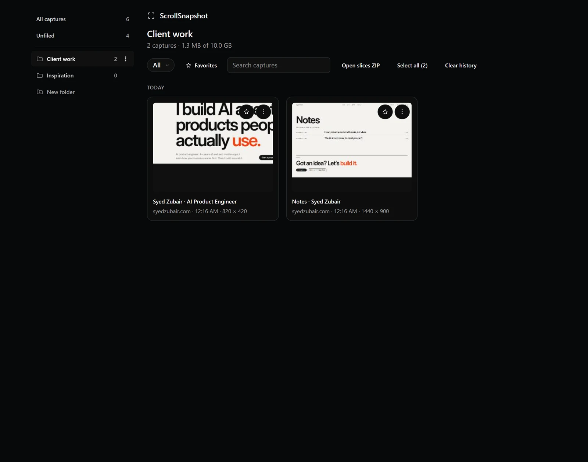
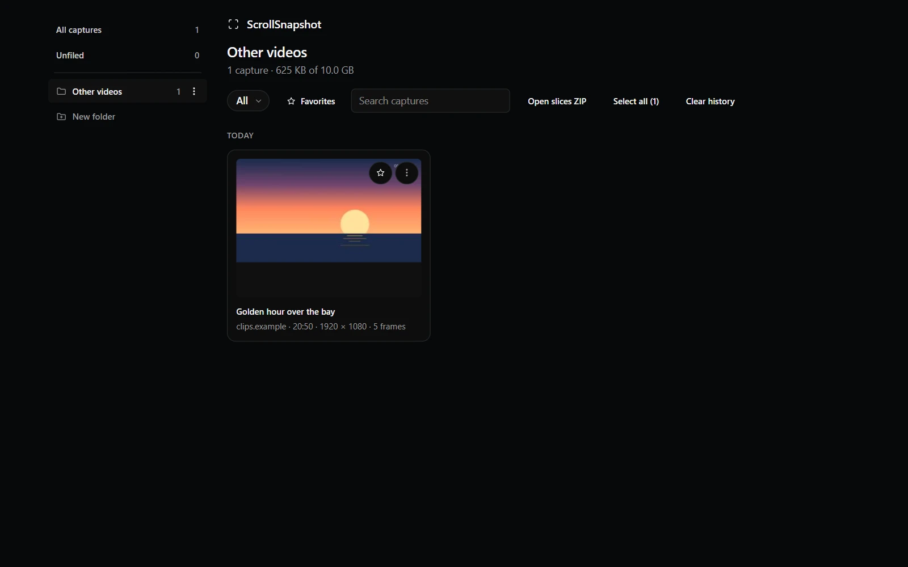

What the sidebar shows
The History page now has a folder sidebar. At the top are All captures and Unfiled, each with a count. Below them are your folders, each with its own count, and a New folder button. Choosing one filters the list to that folder.
Make a folder
Each folder has a menu beside its name for renaming it or deleting it. Deleting a folder asks you to confirm first.
- Open History from the popup or Settings.
- Press New folder in the sidebar and type a name.
- Press Enter. The new folder opens at once, and is empty until you file something in it.
- Name folders after something that outlives the capture: a project, a client, a release.
Select captures
Click the box on a card to select it. Shift-click a second box to select the whole range between them, or press Select all in the toolbar to take everything in the current view. A bar appears at the bottom with the number selected and the actions you can take on them: Move to…, Download ZIP, Favourite, Delete, and Clear selection.
Move them in
Press Move to… and choose a folder from the menu. The same menu has a New folder… entry, so you can create one and file into it in a single step. You can also drag a card, or a selection, straight onto a folder in the sidebar.
Every capture also has a three-dot menu. Its Move to folder entry files that one capture, and Remove from folder takes it back out.

The menu on every capture
The three-dot menu on a capture can open it, open the original page, copy the link or the image, download it, rename it, move it, or delete it. Folders have the same kind of menu for the actions that make sense on a folder.
Video frames file themselves
A frame from a video goes into a folder named for its platform without you doing anything: YouTube, Twitch, TikTok, Douyin, Instagram or Vimeo, and Other videos for any other site. The folder appears the first time it is needed, and the same name is used on disk: the download lands in ScrollSnapshot/<Platform>/ in your downloads folder. A burst's card says how many frames it holds, and downloading it, or its folder as a ZIP, includes every frame, numbered.
Turn this off with File video frames into a folder per platform under Settings → Output. Frames then stay unfiled and download into your downloads folder like any other capture.

Kept, and easy to take away
The count and age limits in Settings, Keep captures and Delete after, never remove a capture that is in a folder. Clear history asks first and can leave the captures in folders alone. Download ZIP on a selection, or on a folder, packs the captures into a single archive you can hand to someone else.